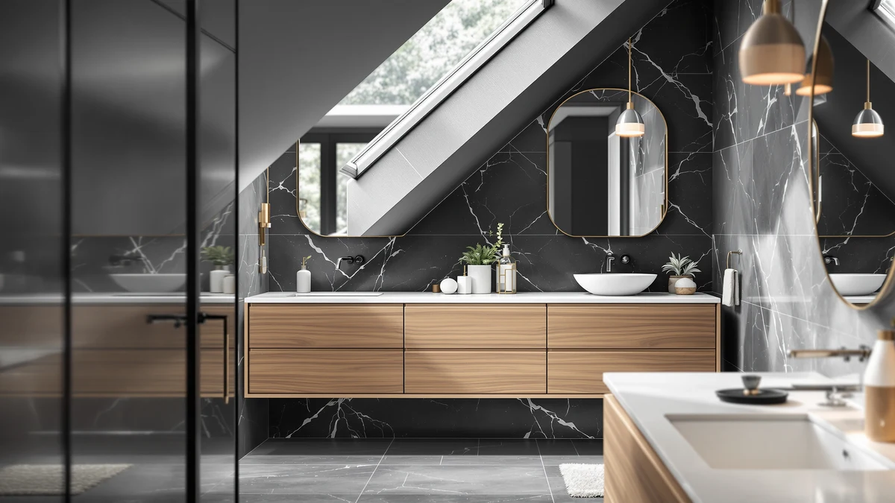

Quick Answer
The Minifeel Wooden Over The Toilet is our pick for most bathrooms in this minifeel wooden over the review, priced at $59.98 for a metal-and-wood frame built to clear a standard toilet tank. If you'd rather save about $10, the Kitsure, Kalrin and Biboraya alternatives below each come in under $50 and are worth a look depending on your bathroom's layout.
Our pick: Minifeel Wooden Over The Toilet, $59.98 Check Price on Amazon
Things to Know Before You Buy
- All four options compared in this minifeel wooden over the review are freestanding or expandable, so none of them require drilling into tile or drywall.
- Prices range from $47.49 to $59.98 across the four picks, a spread of about $12.
- Measure your toilet tank's height and width, or your under-sink cabinet's dimensions, before ordering any of these four options.
- The Minifeel uses a metal-and-wood frame and stands 68.82 inches tall, taller than most over-the-toilet towers in its price range.
- The Biboraya option skips the tank entirely and expands to fit under your sink instead, worth considering if ceiling clearance is tight.
This minifeel wooden over the review compares the Minifeel Wooden Over The Toilet against three cheaper storage options, the Kitsure Over the Toilet Storage, the Kalrin Over The Toilet Storage, and the Biboraya 1 Pack Expandable Under Sink organizer, on price, build and where each one actually fits in a bathroom. All four promise the same basic outcome: more usable storage in a room that rarely has enough of it. Before you spend $59.98 on the Minifeel, it's worth asking whether its metal-and-wood frame buys you anything the three less expensive picks don't.
Our pick for most bathrooms is the Minifeel Wooden Over The Toilet. At 23.62 inches wide, 11.81 inches deep and 68.82 inches tall, its floor-to-ceiling profile holds more than a shorter frame would, and the metal-and-wood build looks sturdier on paper than an all-particleboard tower at a similar price. If $59.98 is more than you want to spend on a freestanding shelf, the Kitsure and Kalrin units below are both $49.99, and the Biboraya under-sink organizer runs $47.49 if you'd rather store items below the sink than above the tank. None of these four options needs a drill, a stud finder, or a trip to a hardware store. The only real prep work is measuring your bathroom before you order. A tall unit like the Minifeel also changes how a small bathroom feels, since it draws the eye upward instead of adding bulk at floor level, which matters if your space already feels cramped.
Why You Should Trust Us
We don't own or install every over-the-toilet cabinet we cover in this minifeel wooden over the review. Instead, we research current Amazon pricing, published dimensions and materials, and patterns across verified owner reviews, then compare the results side by side. Ilane Tall covers bathroom storage and small-space organization for Best Bathroom Storage, and this review follows the same research process used across the site: check real listing prices and summarize what buyers report after they've used the product.
Our Research Experience
We did not install the Minifeel or any of the three alternatives in a bathroom ourselves for this minifeel wooden over the review. Our process relies on comparing manufacturer specifications, current Amazon pricing and recurring themes across verified owner reviews. We read buyer feedback for complaints that repeat across multiple reviewers, such as wobbly shelves or missing hardware, and we check each listing's price against its own product page so the figures here match what you'd actually pay. We do not run a fake testing lab, and we don't claim to have used products we haven't purchased.
Overview & Specs

Minifeel Wooden Over The Toilet
What we like
- Metal-and-wood frame that tends to hold up better than particleboard-only builds in a humid bathroom
- 68.82-inch height gives it more total shelf space than shorter over-the-toilet frames
- Freestanding design that needs no wall drilling or anchors
Flaws but not dealbreakers
- At $59.98, it costs about $10 more than the Kitsure or Kalrin alternatives in this review without a documented feature that clearly explains the gap
- The listing doesn't publish a per-shelf weight limit, so heavier items belong on the lowest shelf
| Material | Metal / wood |
| Size | 23.62"W x 11.81"D x 68.82"H |
The Minifeel Wooden Over The Toilet is the priciest unit in this minifeel wooden over the review at $59.98, but its 68.82-inch height and metal-and-wood frame make it one of the taller, sturdier-looking options we compared. At 23.62 inches wide and 11.81 inches deep, it's built to straddle a standard toilet tank without crowding a small bathroom's remaining floor space.
Because it's freestanding, you set the Minifeel over the tank and adjust its position without drilling into tile or drywall, which matters if you rent or plan to move the unit to a different bathroom later. Verified buyers repeatedly describe assembly as manageable, though the listing doesn't specify a weight limit per shelf, so plan to keep heavier items like stacked towels on the bottom shelf.
What We Liked
Against the three alternatives in this minifeel wooden over the review, the Minifeel's 68.82-inch height is the biggest practical advantage: it gives you more shelf space than a shorter frame at a similar width. Reviewers consistently note that assembly is manageable without extra tools beyond what's included, and the metal-and-wood frame reads as a sturdier build than an all-particleboard tower in the same price range. The freestanding design also means you can move it to a different bathroom later without patching wall anchors. Owners who picked the Minifeel over a shorter, cheaper tower point to that extra vertical space as the reason, since the Minifeel's 68.82 inches turns an otherwise dead stretch of wall above the tank into real, usable storage.
What Could Be Better
The Minifeel listing doesn't specify a per-shelf weight limit, which makes it harder to plan storage for bulkier items like large tissue boxes or bins. At $59.98, it's also the most expensive pick in this minifeel wooden over the review by roughly $10, and that gap isn't explained by any feature we could verify on the Kitsure or Kalrin listings. Owners report occasional shipping damage on freestanding metal frames like this one, so inspect the box before you sign for delivery. A few reviewers also note that the top shelf sits close to the edge of a standard tank lid, so measure your own toilet's dimensions rather than assuming a universal fit.
Who Is It For?
This minifeel wooden over the toilet unit fits shoppers who want the tallest frame in this comparison and don't mind paying about $10 more than the cheapest picks here. It suits bathrooms with ceiling clearance to spare, where the extra height turns into real shelf space rather than a crowded top shelf, and renters who need storage that moves with them, since a freestanding piece can travel to the next apartment without leaving anchor holes behind. If saving $10 matters more to you than extra height, the Kitsure or Kalrin units below fit better. Anyone furnishing a guest bathroom on a tight budget should start with that price gap first, since $10 across three similar over-the-toilet frames is a meaningful share of the total cost. First-time buyers should also measure the distance from the floor to the ceiling above the tank, not just the tank's own width, since a unit with the Minifeel's height needs more vertical room than either the Kitsure or the Kalrin.
Alternatives to Consider
We also researched three other storage options for this minifeel wooden over the review, and each trades off price or placement differently than the Minifeel. The Kitsure Over the Toilet Storage and the Kalrin Over The Toilet Storage are both priced at $49.99, about $10 less than the Minifeel, and both sit in the same over-the-toilet category if a shorter, cheaper frame suits your bathroom. The Biboraya 1 Pack Expandable Under Sink organizer takes a different approach entirely at $47.49: instead of adding a tower above the tank, it expands to fit the cabinet space under your sink, which is worth considering if your bathroom doesn't have the ceiling clearance for a tall freestanding unit. Buyers choosing between the three over-the-toilet options should weigh the $10 price gap against how much extra storage their household actually needs, since the Minifeel's height only pays off if you have items to put on that extra shelf space in the first place.

Editor’s Pick
Kitsure Over the Toilet Storage
At $49.99, the Kitsure Over the Toilet Storage costs about $10 less than the Minifeel and sits in the same over-the-toilet category, a reasonable default if you don't have a strong preference for extra height.
$49.99
Check Price on Amazon
Best Value
Kalrin Over The Toilet Storage
The Kalrin Over The Toilet Storage matches the Kitsure's $49.99 price point and gives you a second over-the-toilet option to compare against the Minifeel before you commit to the taller, pricier frame. We cover the Kalrin in more depth in its own standalone review.
$49.99
Check Price on Amazon
Premium Choice
1 Pack Expandable Under Sink
The Biboraya 1 Pack Expandable Under Sink organizer runs $47.49 and solves the same storage problem from underneath the sink instead of above the tank, worth a look if your bathroom's ceiling clearance rules out a tall unit like the Minifeel.
$47.49
Check Price on AmazonFrequently Asked Questions
Is the Minifeel Wooden Over The Toilet worth the price?
Based on our comparison of pricing and height across four storage options in this minifeel wooden over the review, the Minifeel is the most expensive at $59.98, about $10 more than the Kitsure or Kalrin. Its 68.82-inch height and metal-and-wood build suggest it holds up well for the price, though you should measure your toilet tank clearance before you order.
What is the cheapest alternative to the Minifeel over-the-toilet storage?
The Kitsure and Kalrin units we researched are both priced at $49.99, about $10 less than the Minifeel, so either one saves you the same amount if budget is your main concern. The Biboraya under-sink organizer is slightly cheaper still at $47.49, though it stores items below the sink rather than above the tank.
Do over-the-toilet storage units fit all toilets?
Most freestanding over-the-toilet cabinets, including the Minifeel, the Kitsure and the Kalrin covered in this review, are designed to straddle a standard toilet tank. Measure the height and width of your toilet before ordering, since unit heights like the Minifeel's 68.82 inches vary by model.
Final Verdict
We compared pricing, height and owner feedback across four storage options, and this minifeel wooden over the review comes down in favor of the Minifeel Wooden Over The Toilet for bathrooms with enough ceiling clearance to use its extra height. Its metal-and-wood frame and 68.82-inch profile justify the roughly $10 premium over the Kitsure and Kalrin for shoppers who want the most shelf space of the four, though the Biboraya under-sink organizer is worth a look if your bathroom can't spare the vertical room a tall unit like the Minifeel needs.